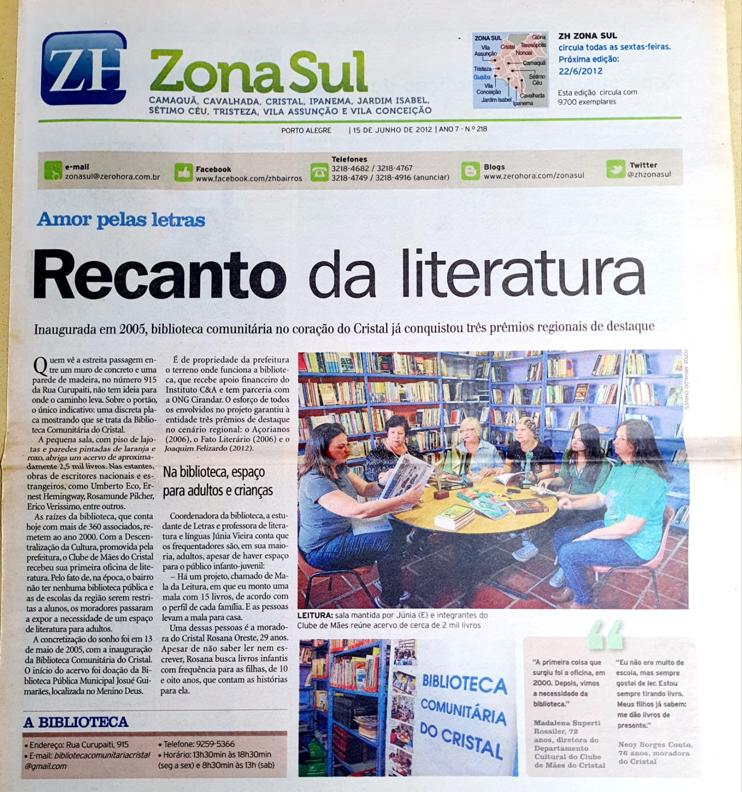
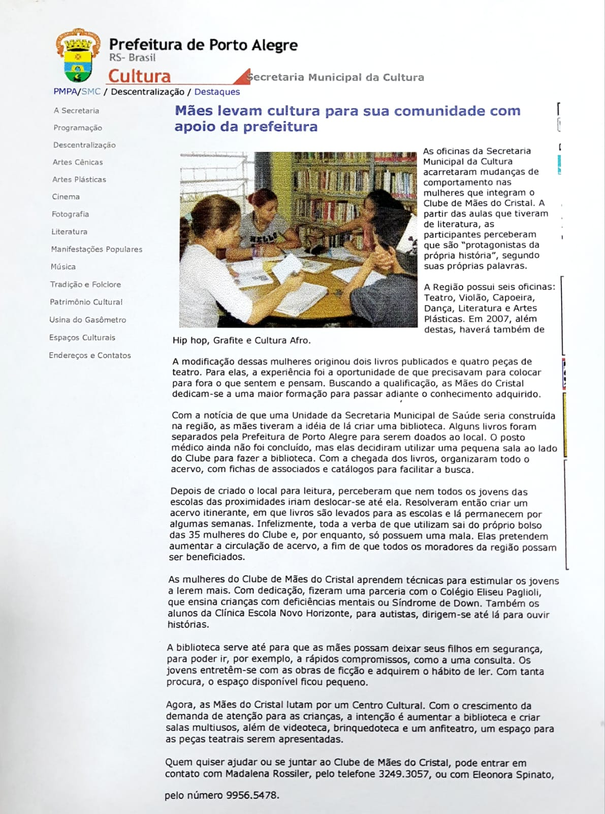

Atividades
Eventos & Participações
Oficinas Literárias & Encontros
Desde sua fundação, a Biblioteca Comunitária do Cristal e o Clube de Mães promovem encontros com escritores, lançamentos de livros e saraus literários, incentivando a leitura na comunidade.
Saraus Literários Mensais
Em comemoração ao aniversário da biblioteca, os saraus literários acontecem mensalmente, reunindo leitores, moradores do bairro e a comunidade cultural da cidade.
Presença em Seminários & Encontros
A Biblioteca já esteve presente em eventos regionais e nacionais, compartilhando sua experiência na área do livro e da leitura.
Expansão & Impacto na Comunidade
Ao longo dos anos, a Biblioteca cresceu pelo seu acervo qualificado e pela visibilidade de suas ações em escolas, instituições regionais, praças e feiras como Porto Alegre 24 Horas de Cultura.
Ações e Projetos
Mediação de Leitura
Atividade que promove a leitura compartilhada entre crianças, jovens e adultos, estimulando a reflexão e a troca de experiências.
Visitas a Residenciais Geriátricos
A Biblioteca Comunitária do Cristal realiza visitas a residenciais geriátricos, levando momentos de leitura e conversa para os idosos, fortalecendo laços entre gerações.
Biblioteca Viva
Projeto que leva livros e atividades culturais para escolas e espaços comunitários, garantindo que a leitura chegue a diversos públicos.
Leitura na Praça
Iniciativa que disponibiliza livros gratuitos em locais públicos, incentivando o hábito da leitura de forma acessível.
Premiações & Reconhecimentos
Prêmio Açorianos de Literatura (2006)
Vencedora na categoria "Destaque em Biblioteca". Também indicada pela Câmara Riograndense do Livro como "Biblioteca do Ano", recebendo o prêmio "O Sul – Nacional e os Livros".
IV Prêmio Joaquim Felizardo (2012)
Reconhecimento na categoria Biblioteca Comunitária pelo impacto cultural e social.
Prêmio de Modernização de Bibliotecas Comunitárias (2013)
Selecionada entre 100 projetos nacionais pelo Ministério da Cultura, fortalecendo a leitura em Unidades Básicas de Saúde do entorno da biblioteca.
- Divisoteca (USF Divisa) – 30/09/2014
- Cantinho do Livro (USF São Gabriel) – 14/05/2015
- Ler para Saber (USF Graciliano Ramos) – 30/11/2015
- Cantinho do Saber (UBS Nossa Senhora das Graças) – 17/02/2017
Indicação ao Prêmio Atenéa Felistoffa (2017)
Indicada pelo Conselho Regional de Biblioteconomia do Rio Grande do Sul como a única biblioteca comunitária na disputa, pelos serviços prestados à área no estado.
Destaque na Mídia


A Biblioteca tem sido reconhecida pela mídia pelo seu impacto na comunidade.